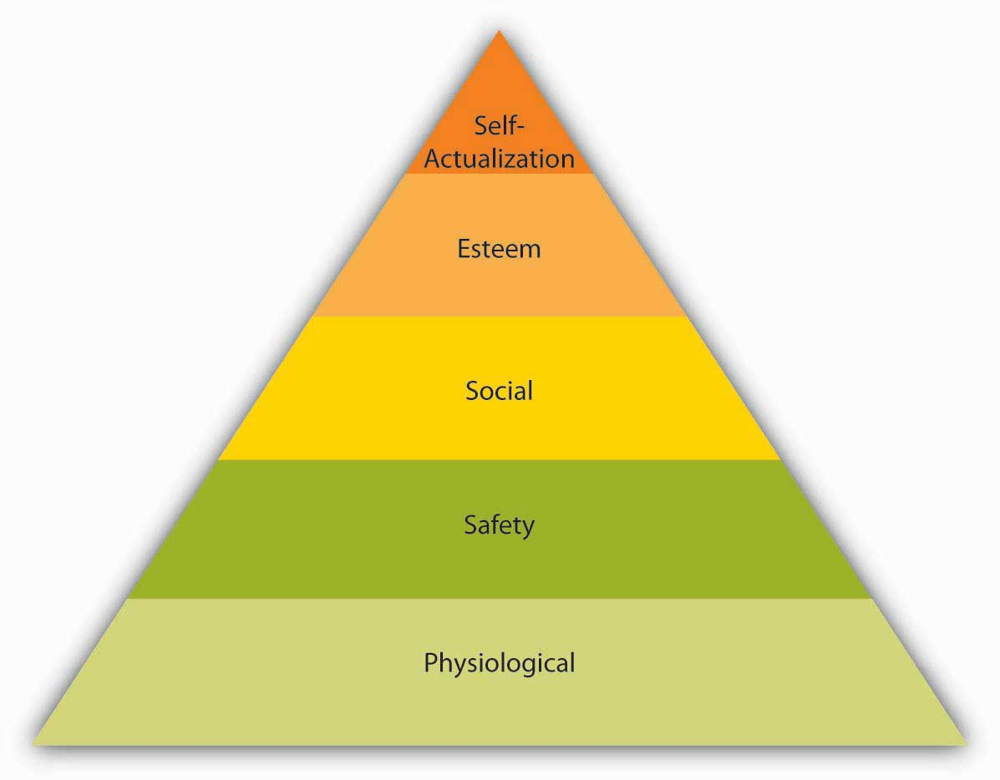
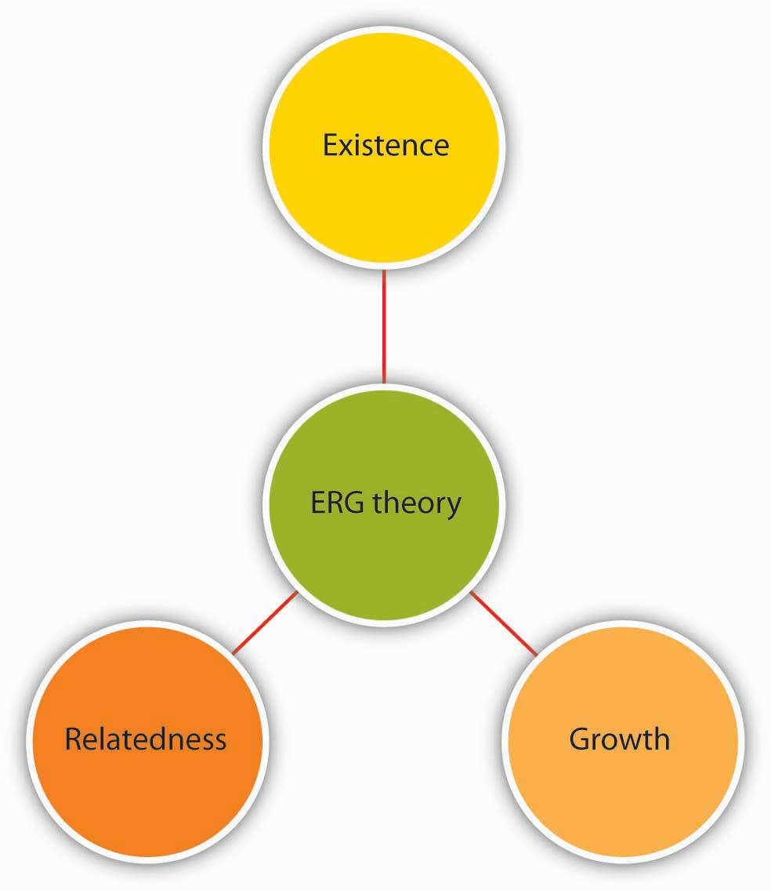
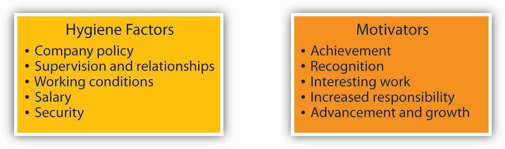

The earliest answer to motivation involved understanding individual needs. Specifically, early researchers thought that employees try hard and demonstrate goal-driven behavior to satisfy needs. For example, an employee who is always walking around the office talking to people may have a need for companionship and his behavior may be a way of satisfying this need. There are four major theories in the need-based category: Maslow’s hierarchy of needs, ERG theory, Herzberg’s dual factor theory, and McClelland’s acquired needs theory.
Abraham Maslow is among the most prominent psychologists of the 20th century and the hierarchy of needs, accompanied by the pyramid representing how human needs are ranked, is an image familiar to most business students and managers. Maslow’s theory is based on a simple premise: Human beings have needs that are hierarchically ranked.Maslow, A. H. (1943). A theory of human motivation. Psychological Review, 50, 370–396; Maslow, A. H. (1954). Motivation and personality. New York: Harper. There are some needs that are basic to all human beings, and in their absence, nothing else matters. As we satisfy these basic needs, we start looking to satisfy higher-order needs. Once a lower-level need is satisfied, it no longer serves as a motivator.
The most basic of Maslow’s needs are physiological needsThe need for air, food, and water.. Physiological needs refer to the need for air, food, and water. Imagine being very hungry. At that point, all your behavior may be directed at finding food. Once you eat, though, the search for food ceases and the promise of food no longer serves as a motivator. Once physiological needs are satisfied, people tend to become concerned about safetyThe need to be safe from danger, pain, or an uncertain future.. Are they safe from danger, pain, or an uncertain future? One level up, social needsThe need to bond with other human beings, to be loved, and to form lasting attachments with them. refer to the need to bond with other human beings, to be loved, and to form lasting attachments. In fact, having no attachments can negatively affect health and well-being.Baumeister, R. F., & Leary, M. R. (1995). The need to belong: Desire for interpersonal attachments as a fundamental human motivation. Psychological Bulletin, 117, 497–529. The satisfaction of social needs makes esteem needsThe desire to be respected by one’s peers, feeling important, and being appreciated. more salient. Esteem needs refer to the desire to be respected by one’s peers, feeling important, and being appreciated. Finally, at the highest level of the hierarchy, the need for self-actualizationThe quality of “becoming all you are capable of becoming.” refers to “becoming all you are capable of becoming.” This need manifests itself by acquiring new skills, taking on new challenges, and behaving in a way that will lead to the satisfaction of one’s life goals.
Figure 14.5 Maslow’s Hierarchy of Needs
Source: Adapted from Maslow, A. H. (1954). Motivation and personality. New York: Harper.
Maslow’s hierarchy is a systematic way of thinking about the different needs employees may have at any given point and explains different reactions they may have to similar treatment. An employee who is trying to satisfy her esteem needs may feel gratified when her supervisor praises her. However, another employee who is trying to satisfy his social needs may resent being praised by upper management in front of peers if the praise sets him apart from the rest of the group.
So, how can organizations satisfy their employees’ various needs? By leveraging the various facets of the planning-organizing-leading-controlling (P-O-L-C) functions. In the long run, physiological needs may be satisfied by the person’s paycheck, but it is important to remember that pay may satisfy other needs such as safety and esteem as well. Providing generous benefits, including health insurance and company-sponsored retirement plans, as well as offering a measure of job security, will help satisfy safety needs. Social needs may be satisfied by having a friendly environment, providing a workplace conducive to collaboration and communication with others. Company picnics and other social get-togethers may also be helpful if the majority of employees are motivated primarily by social needs (but may cause resentment if they are not and if they have to sacrifice a Sunday afternoon for a company picnic). Providing promotion opportunities at work, recognizing a person’s accomplishments verbally or through more formal reward systems, job titles that communicate to the employee that one has achieved high status within the organization are among the ways of satisfying esteem needs. Finally, self-actualization needs may be satisfied by providing development and growth opportunities on or off the job, as well as by assigning interesting and challenging work. By making the effort to satisfy the different needs each employee may have at a given time, organizations may ensure a more highly motivated workforce.
ERG theory of Clayton Alderfer is a modification of Maslow’s hierarchy of needs.Alderfer, C. P. (1969). An empirical test of a new theory of human needs. Organizational Behavior and Human Performance, 4, 142–175. Instead of the five needs that are hierarchically organized, Alderfer proposed that basic human needs may be grouped under three categories, namely, ExistenceThis need corresponds to Maslow’s physiological and safety needs., RelatednessThis need corresponds to social needs., and GrowthThis need refers to Maslow’s esteem and self-actualization. (see the following figure). Existence need corresponds to Maslow’s physiological and safety needs, relatedness corresponds to social needs, and growth need refers to Maslow’s esteem and self actualization.
Figure 14.7 ERG Theory
Source: Based on Alderfer, C. P. (1969). An empirical test of a new theory of human needs. Organizational Behavior and Human Performance, 4, 142–175.
ERG theory’s main contribution to the literature is its relaxation of Maslow’s assumptions. For example, ERG theory does not rank needs in any particular order and explicitly recognizes that more than one need may operate at a given time. Moreover, the theory has a “frustration-regression” hypothesis, suggesting that individuals who are frustrated in their attempts to satisfy one need may regress to another one. For example, someone who is frustrated by the lack of growth opportunities in his job and slow progress toward career goals may regress to relatedness needs and start spending more time socializing with one’s coworkers. The implication of this theory is that we need to recognize the multiple needs that may be driving an individual at a given point to understand his behavior and to motivate him.
Frederick Herzberg approached the question of motivation in a different way. By asking individuals what satisfies them on the job and what dissatisfies them, Herzberg came to the conclusion that aspects of the work environment that satisfy employees are very different from aspects that dissatisfy them.Herzberg, F., Mausner, B., & Snyderman, B. (1959). The motivation to work. New York: Wiley; Herzberg, F. (1965). The motivation to work among Finnish supervisors. Personnel Psychology, 18, 393–402. Herzberg labeled factors causing dissatisfaction of workers as “hygiene” factors because these factors were part of the context in which the job was performed, as opposed to the job itself. Hygiene factorsThe factors that include company policies, supervision, working conditions, salary, safety, and security on the job. included company policies, supervision, working conditions, salary, safety, and security on the job. To illustrate, imagine that you are working in an unpleasant work environment. Your office is too hot in the summer and too cold in the winter. You are being harassed and mistreated. You would certainly be miserable in such a work environment. However, if these problems were solved (your office temperature is just right and you are not harassed at all), would you be motivated? Most likely, you would take the situation for granted. In fact, many factors in our work environment are things that we miss when they are absent, but take for granted if they are present.
In contrast, motivatorsThe factors that are intrinsic to the job, such as achievement, recognition, interesting work, increased responsibilities, advancement, and growth opportunities. are factors that are intrinsic to the job, such as achievement, recognition, interesting work, increased responsibilities, advancement, and growth opportunities. According to Herzberg’s research, motivators are the conditions that truly encourage employees to try harder.
Figure 14.8 Two-Factor Theory of Motivation
Source: Based on Herzberg, F., Mausner, B., & Snyderman, B. (1959). The motivation to work. New York: Wiley; Herzberg, F. (1965). The motivation to work among Finnish supervisors. Personnel Psychology, 18, 393–402.
Herzberg’s research, which is summarized in the figure above, has received its share of criticism.Cummings, L. L., & Elsalmi, A. M. (1968). Empirical research on the bases and correlates of managerial motivation. Psychological Bulletin, 70, 127–144; House, R. J., & Wigdor, L. A. (1967). Herzberg’s dual-factor theory of job satisfaction and motivation: A review of the evidence and a criticism. Personnel Psychology, 20, 369–389. One criticism relates to the classification of the factors as hygiene or motivator. For example, pay is viewed as a hygiene factor. However, pay is not necessarily a contextual factor and may have symbolic value by showing employees that they are being recognized for their contributions as well as communicating to them that they are advancing within the company. Similarly, quality of supervision or relationships employees form with their supervisors may determine whether they are assigned interesting work, whether they are recognized for their potential, and whether they take on more responsibilities. Despite its limitations, the two-factor theory can be a valuable aid to managers because it points out that improving the environment in which the job is performed goes only so far in motivating employees.
Among the need-based approaches to motivation, Douglas McClelland’s acquired needs theory is the one that has received the greatest amount of support. According to this theory, individuals acquire three types of needs as a result of their life experiences. These needs are need for achievement, need for affiliation, and need for power. All individuals possess a combination of these needs.
Those who have high need for achievementHaving a strong need to be successful. have a strong need to be successful. A worker who derives great satisfaction from meeting deadlines, coming up with brilliant ideas, and planning his or her next career move may be high in need for achievement. Individuals high on need for achievement are well suited to positions such as sales where there are explicit goals, feedback is immediately available, and their effort often leads to success.Harrell, A. M., & Stahl, M. J. (1981). A behavioral decision theory approach for measuring McClelland’s trichotomy of needs. Journal of Applied Psychology, 66, 242–247; Trevis, C. S., & Certo, S. C. (2005). Spotlight on entrepreneurship. Business Horizons, 48, 271–274; Turban, D. B., & Keon, T. L. (1993). Organizational attractiveness: An interactionist perspective. Journal of Applied Psychology, 78, 184–193. Because of their success in lower-level jobs, those in high need for achievement are often promoted to higher-level positions.McClelland, D. C., & Boyatzis, R. E. (1982). Leadership motive pattern and long-term success in management. Journal of Applied Psychology, 67, 737–743. However, a high need for achievement has important disadvantages in management. Management involves getting work done by motivating others. When a salesperson is promoted to be a sales manager, the job description changes from actively selling to recruiting, motivating, and training salespeople. Those who are high in need for achievement may view managerial activities such as coaching, communicating, and meeting with subordinates as a waste of time. Moreover, they enjoy doing things themselves and may find it difficult to delegate authority. They may become overbearing or micromanaging bosses, expecting everyone to be as dedicated to work as they are, and expecting subordinates to do things exactly the way they are used to doing.McClelland, D. C., & Burnham, D. H. (1976). Power is the great motivator. Harvard Business Review, 25, 159–166.
Individuals who have a high need for affiliationThe need to be liked and accepted by others. want to be liked and accepted by others. When given a choice, they prefer to interact with others and be with friends.Wong, M. M., & Csikszentmihalyi, M. (1991). Affiliation motivation and daily experience: Some issues on gender differences. Journal of Personality and Social Psychology, 60, 154–164. Their emphasis on harmonious interpersonal relationships may be an advantage in jobs and occupations requiring frequent interpersonal interaction, such as social worker or teacher. In managerial positions, a high need for affiliation may again serve as a disadvantage because these individuals tend to be overly concerned about how they are perceived by others. Thus, they may find it difficult to perform some aspects of a manager’s job such as giving employees critical feedback or disciplining poor performers.
Finally, those with high need for powerThe desire to influence others and control their environment. want to influence others and control their environment. Need for power may be destructive of one’s relationships if it takes the form of seeking and using power for one’s own good and prestige. However, when it manifests itself in more altruistic forms, such as changing the way things are done so that the work environment is more positive or negotiating more resources for one’s department, it tends to lead to positive outcomes. In fact, need for power is viewed as important for effectiveness in managerial and leadership positions.McClelland, D. C., & Burnham, D. H. (1976). Power is the great motivator. Harvard Business Review, 25, 159–166; Spangler, W. D., & House, R. J. (1991). Presidential effectiveness and the leadership motive profile. Journal of Personality and Social Psychology, 60, 439–455; Spreier, S. W. (2006). Leadership run amok. Harvard Business Review, 84, 72–82.
McClelland’s theory of acquired needs has important implications for motivating employees. While someone who has high need for achievement may respond to goals, those with high need for affiliation may be motivated to gain the approval of their peers and supervisors, whereas those who have high need for power may value gaining influence over the supervisor or acquiring a position that has decision-making authority. And, when it comes to succeeding in managerial positions, individuals who are aware of the drawbacks of their need orientation can take steps to overcome these drawbacks.
Need-based theories describe motivated behavior as individual efforts to meet needs. According to this perspective, the manager’s job is to identify what people need and then to make sure that the work environment becomes a means of satisfying these needs. Maslow’s hierarchy categorizes human needs into physiological, safety, social, esteem, and self-actualization needs. ERG theory is a modification of Maslow’s hierarchy, where the five needs are collapsed into three categories (existence, relatedness, and growth). The two-factor theory differentiates between factors that make people dissatisfied on the job (hygiene factors) and factors that truly motivate employees. Finally, acquired-needs theory argues that individuals possess stable and dominant motives to achieve, acquire power, or affiliate with others. Each of these theories explains characteristics of a work environment that motivate employees.